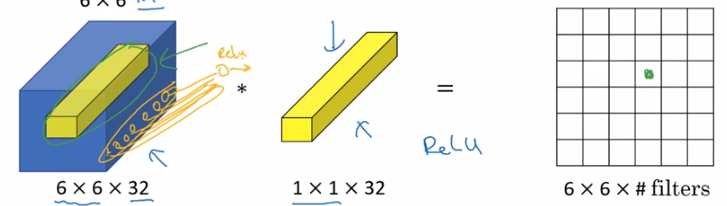

Lin. et. al., 2013. Network in network
1. 什么是1*1卷积
单通道场景中，1 1卷积看上去没什么用，相当于所有像素值乘以一个实数。
多通道场景中，1 1卷积是有用的。相当于对一个像素在所有通道上的点做一次全连接的计算，即一个像素在所有通道上的点与kernal做点乘，得到一个值。

1 * 1卷积又叫network in network
2. 应用
（1）改变通道数
在不改变图像大小的情况下改变通道数。 例如：
通过减少通道数减少计算量
（2）非线性变换
即使不改变通道数，可以用这种1 * 1卷积。相当于对原始数据做了一次非线性变换，使得可以学习更复杂的特征。